Whenever there is a strong wind, the front door of Neenu's house usually bangs against the wall. Neenu and her brother managed to get some objects and they fixed them on the portion connecting the wall and the door. Now if the door is opened, it remains close to the wall itself. The door does not bang against the wall when the wind blows. Having noticed this their mother asked, “What trick have you both done there?” Yes, what might have they done? Can you suggest any method using the objects mentioned below?
Page 16

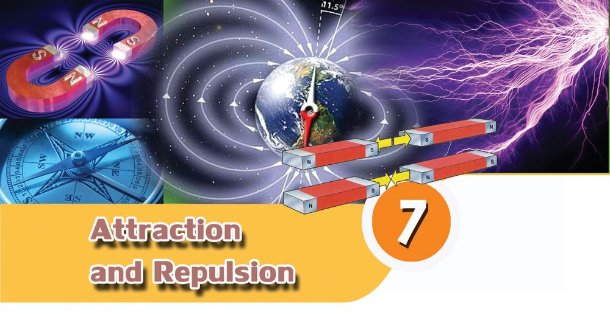
Page 17


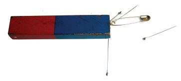
Basic Science - VI Set 1 – wooden block, gum Set 2 – magnet, iron piece Set 3 – two magnets Set 4 – bricks
Magnets that attract Have you heard of magnets? What do you know about them? Magnets attract certain objects. Which are they? Let’s try this activity. Bring pins, a blade, safety pins and an iron nail close to a magnet. See what happens.
Those that attract and those that do not From the given list, find out those which are attracted by a magnet. Materials required: Hinges, different coins, screwdriver, compass, stainless steel utensil, aluminium wire, copper wire, pen, rubber, glass piece, spoon, gem clip, plastic. Tabulate your findings in the science diary.
KT 635-2/Bac. Science 6 (E)Vol-2
Those attracted by magnet
Those not attracted by magnet
You may expand the table by examining other objects in and around your home too. There are many objects that are attracted by a magnet. What are they made of?
Substances attracted by magnet are magnetic substances and those not attracted are known as non - magnetic substances. Iron, nickel, cobalt and steel are magnetic substances. 89
Page 18


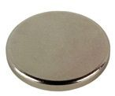
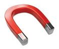
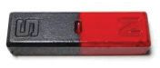
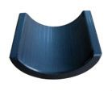
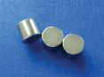

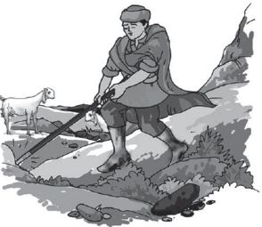
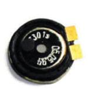
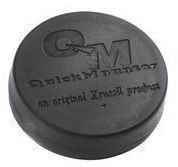
Basic Science - VI
Story behind the discovery of magnet A Greek shepherd named Magnus was grazing his sheep on a hilly area holding a stick in his hand. While climbing a rock, he felt that his stick had got stuck to the rock. It was the piece of iron at the tip of the stick that was attracted by the rock. The rock was nothing but lodestone, capable of attracting iron. The Greeks later started calling such rocks as magnetite. These are natural magnets. Later on magnets were made using iron, steel etc. Such magnets are artificial magnets.
Different types of magnets Are all magnets of the same size and shape? Do you have a magnet? What is its shape? Let’s familiarise ourselves with different types of magnets. Examine the figures showing some common magnets in use.
Bar magnet
U magnet
Disc magnet
Ring magnet
Arc magnet
Cylindrical magnet
Which among these have you seen? Examine the magnets in your school lab.
Magnets are made using ‘alnico’ which is an alloy of aluminium, nickel, cobalt and iron. Substances like neodymium and samarium are also used for making magnets.
Uses of magnets What are the different purposes for which magnets are used? Sound is produced by speakers in TV, radio, mike sets (public address systems) etc. Magnets are used in speakers. There are magnets in mobile phones and head phones too. Find out more devices that make use of magnets and tabulate them. Observe both the figures.
90
Page 19

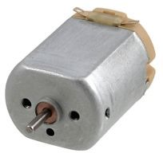
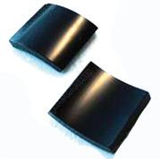
Basic Science - VI
$
What may be the reason for keeping big speakers in sound boxes and small ones in headphones?
$
Do both the speakers need sounds of the same loudness? Reason behind using a large magnet in loud speakers
Reason behind using a small magnet in headphones.
When a person addresses a crowd, which speaker would be ideal? Why do magnets differ in shapes? We have learned the shape of magnets used in speakers. Take a look at the figure showing the magnets used in a mini motor. What may be the reason behind the difference in the shape and size of these magnets? The shape and size of magnets differ according to the device in which they are placed. Arc shaped magnets or ring tube magnets are used in mini motors.
When magnets attract Is the attractive power the same on all sides of the magnets? Materials required: Iron dust, magnets of different shapes, thin plastic paper / polythene paper, a chart paper of A4 size.
To collect iron dust We can collect iron dust from our surroundings. Wrap a magnet using cloth or paper and drag it along the soil of the courtyard. Don’t you see a black powder sticking on to it? Does it not prove that there are substances on the earth that are attracted by magnets? Likewise we can collect iron dust from workshops specialising in iron works. It is difficult to separate iron powder that is stuck to a magnet. That is why it is advised to wrap the magnet before collecting iron powder.
91
Page 20


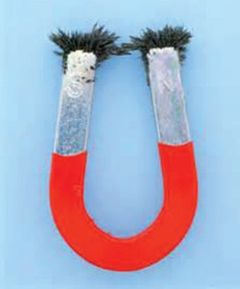
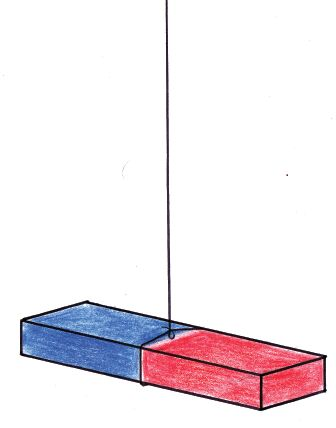
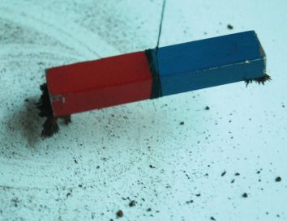
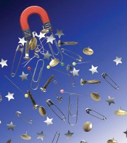
Basic Science - VI Activity Sprinkle iron dust loosely on the chart paper. Suspend a bar magnet using a thread and bring it near the iron dust.
$
Does the iron powder stick evenly to all parts of the magnet?
$ $
In which part is it sticking more? In which part is it less?
The end portions of a magnet where magnetic force is strongly felt are the poles of the magnet. Do all magnets have poles? Repeat the above activity using magnets of different shapes such as circular magnet, ring magnet and U magnet. Record your activities and findings in your science diary.
When a magnet is suspended Does a freely suspended magnet remain in one particular direction always? Materials required: four bar magnets, thread, scale. Take a bar magnet and suspend it horizontally using a thread in such a way that it is balanced. Ensure that there are no magnetic substances nearby. In which direction are the poles when the magnet comes to rest? Suspend the other three magnets like this in different places in your classroom. Are all the magnets at rest in the same direction? Which is the direction?
92
Page 21


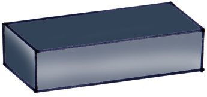
Basic Science - VI Are there markings of S and N on the bar magnets that you have used? Isn’t the end marked S in the south direction and the end marked N in the north direction? On the magnets having no markings, mark N on the end directed to the north and S on the other end. Allow the magnets to rotate. Do all the magnets come to rest in the same direction?
N
S
Freely suspended magnets always come to rest in the north - south direction. When do we make use of this north - south directive property of magnets?
$ $ $
In ships to find the direction. To know the direction inside a forest.
Imagine that you are standing in an unknown place. You can’t see the sun due to the rains. Can you find out the directions with the help of a bar magnet? How will you find out the east side?
When poles come nearer You now know that magnets can attract certain metals. Does a magnet attract another magnet? Activity: Take two magnets on which N and S are marked. Place one of them on a surface. Bring the pole of the other magnet to the middle of this magnet. What do you observe?
$
Is it to the middle part of the first magnet that the second magnet is attracted?
$
Place the magnets closer to each other. Which poles stick to each other?
N
S S
N
93
Page 22


Basic Science - VI Examine the figures given below. Which of them are correct? N (A) N
S
(B)
S S
N
(C)
S
N
N
S
N
S
What happens if the poles are brought near to each other as shown in the figure given below?
S
N
S
N
N
S
S S
N
N
S
N
Perform the experiments and tabulate the observations.
Situations of attraction
$ $
Situations of repulsion
Which poles attract each other when the magnets are brought near? Which poles repel each other when the magnets are brought near?
Poles of the same type in magnets are the like poles and those of the opposite poles are the unlike poles. Like poles of magnets repel each other whereas unlike poles attract each other. Conduct experiments using magnets of different shapes and write down the findings in your science diary.
Let’s make a magnet Can magnetic substances be made into magnets? Materials required: a powerful magnet, a big sewing needle and a blade.
94
Page 23


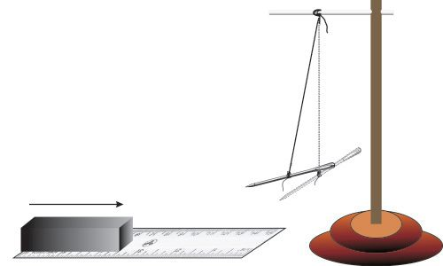
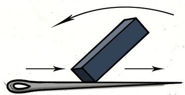
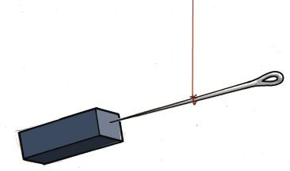
Basic Science - VI Activity: Place the needle on a surface. Using one pole of the magnet rub the needle from one end to the other. Repeat the process by lifting the magnet and bringing it to the original position. Rub the needle 15 – 20 times.
$ $
Rub using one pole alone. Rub in the same direction only.
How will you find out whether this needle has acquired magnetism or not? Can this magnetised needle be used in deter mining the poles of magnets of different shapes? Suspend the needle using a thread in such a way that it is balanced. Bring a bar magnet near the needle. What do you observe? Bring the other end of the magnet near the needle. Record your findings in your science diary. Can you find out the polarity of the magnetised needle? Similarly magnetise a blade. Then take a vessel filled with water and gently place the blade on water so that it floats. What can you infer if the blade comes to rest in the north - south direction?
The range of attraction To what distance can a magnet attract other substances? Is the attractive power of the magnet same everywhere? Let’s examine. Materials required: magnet, needle, scale and stand. Activity: Suspend the needle using the thread in such a way that it is balanced.
95
Page 24


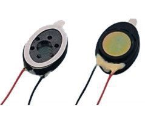
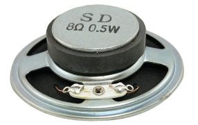

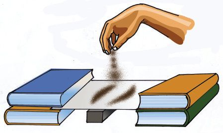
Basic Science - VI Place the scale on the table in such a way that one end of it is below the needle. Move the magnet on the scale from the other end to the side of the needle. Stop moving the magnet when the attractive force is felt on the needle. Measure the distance to the needle. Slowly move the magnet towards the needle. Observe the changes in the needle in each instance. Is there a change in the attractive force on bringing the magnet near the needle? When is the force of attraction of the needle at the maximum? Place an A4 size chart paper on the table as shown in the figure. Sprinkle some iron dust over it loosely. Bring the magnet below the paper. Gently tap the paper.
$
Measure the extent of the magnetic field by observing the movement of the iron dust. Record your activities and observations in the science diary.
The magnetic strength is stronger at the regions near the poles. As the distance from the pole increases the magnetic strength weakens. The region around a magnet where the force of the magnet is felt is the magnetic field. Repeat the experiment using different magnets.
$ $
Is the attractive power the same for all magnets? Is there any difference while using a U magnet? Write down your inference in the science diary.
Let’s collect magnets There are magnets in toys, some vanity bags, purse etc. Examine discarded toys, speakers and mini motors. Don’t you see magnets in them? Collect magnets from them. Why don’t we make a toy using magnets?
96
Page 25


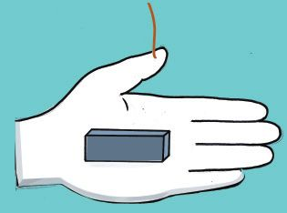
Basic Science - VI
Let’s make a toy Materials required: thermocol, a small ring magnet, string, a small wooden stick and metal screw. Make models of fish using thermocol. Fix metal screw at the mouth of each. Put the fish into water in a wide vessel. Make a fishing rod using small wooden stick, string and a ring magnet. Can you catch fish using the fishing rod? Try to design the following toys using magnets.
$ $ $ $
Doll that clings together. A bird that remains only in one direction. Fish that swim towards rice grains. A palm that is directed to the south only.
Exhibit in the science club the toys and devices you have made.
The learner can
$ $ $ $
recognise and explain the features of a magnet.
$
make toys using magnets.
1.
Of two identical substances, one is an iron piece and the other is a magnet. How do you distinguish between the two?
explain the concept of magnetic field. classify substances as magnetic and non magnetic. understand the uses of magnets of different sizes and shapes and give examples.
97
Page 26


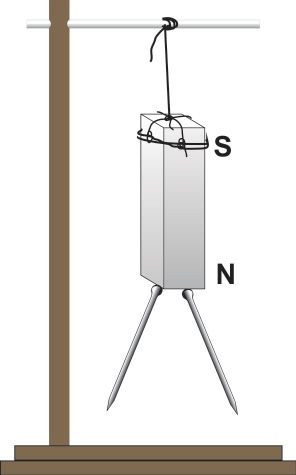
Basic Science - VI 2.
Two bar magnets remain attracted. One pole is marked. Mark the other poles.
3.
Which of the following magnets is used in a speaker?
$
98
A
B
C
D
Two pins are stuck to the north pole of a magnet. The picture shows the free ends of the pins to be divergent. Is it correct? What is the polarity at the ends? How will the pins remain when placed at the South Pole? Try to do.